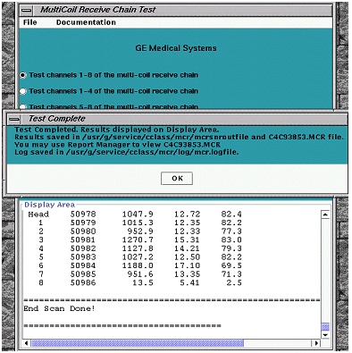

In this example you can see that SNR is very consistent from channel to channel (despite the gain variations) except for receive path 4. This indicates there is a single path failure that needs to be corrected. Refer to the T/S block diagrams available on the MCR Documentation menu (Appendix B in this document). These block diagrams can be used to identify which components to troubleshoot.
Illustration 8: INDIVIDUAL CHANNEL SNR RESULTS
